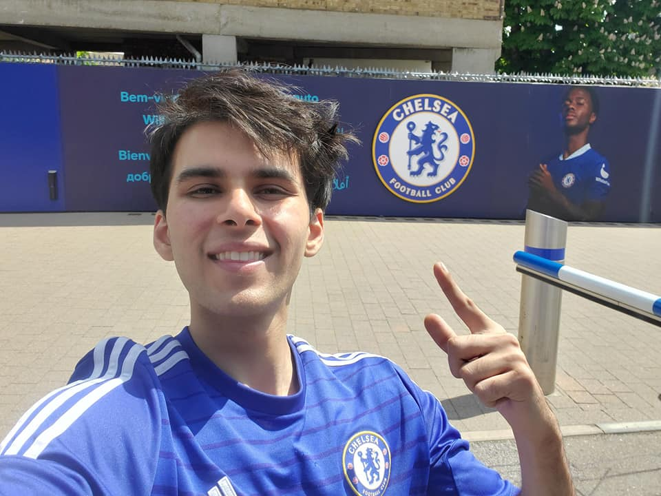

Hi! My name is Yash Sharma, I'm an Austin-based Analyst, Programmer, and Artist with over five years of experience in data analysis, algorithm design, database, and software development. I earned my Bachelor's in Computer Science with a minor in Mathematics from Texas Tech University and am currently pursuing an M.S. in Data Analytics and Information Systems at Texas State University. My background blends technical work with a lifelong passion for creating art, giving me a creative and precise approach to problem-solving.
I've worked on projects that combine modern technology and collaboration, like my Senior Capstone Project CollaBand, a real-time music platform for creating and sharing projects. I also competed in the 2023 Winter Classic Invitational Student Cluster Competition with NASA, Amazon Web Services, and Oak Ridge National Laboratory. Our team, Team Matador, optimized a small HPC cluster, ultimately earning 3rd nationwide. I delivered a lecture at Texas State University on AI-generated art, analyzing trends in visibility and value using Python and data visualization. During my summer internship at Onsemi, I gained hands-on experience in semiconductor processes, inventory management, and operational analytics, building dashboards, tracking production metrics, and analyzing data to generate actionable insights that improved efficiency and reduced bottlenecks in a high-tech manufacturing environment.
I've been making art for as long as I can remember, and I often measure my life by how my art has grown. Each period, each memory, is tied to what I was making at the time, which makes every piece one of a kind. I started with simple sketches and experimenting with whatever materials I could find, then moved into painting and eventually digital work. Now I mix mediums however it feels right, letting the project guide me. I like challenges that push me into new styles or techniques because figuring them out is part of the process. I spend a lot of time studying other art and media, breaking it down to understand it, and then recreating it with pens, markers, or whatever I have around. Making art is just part of how I live and think, shaping how I approach projects, problem-solving, and creativity in everything I do.
